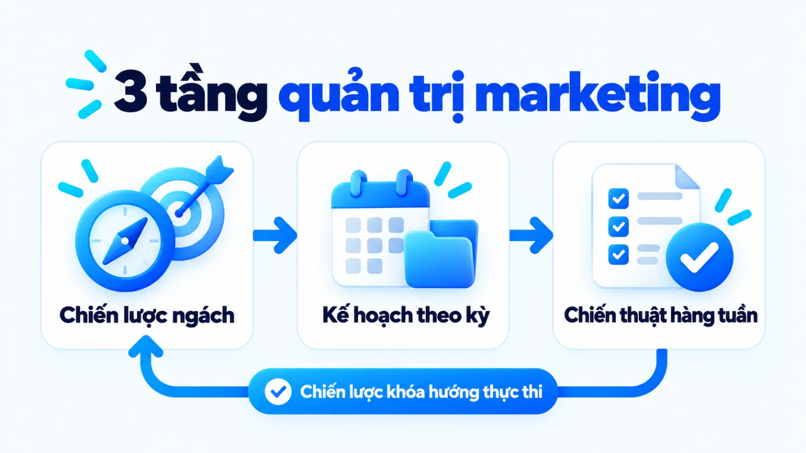
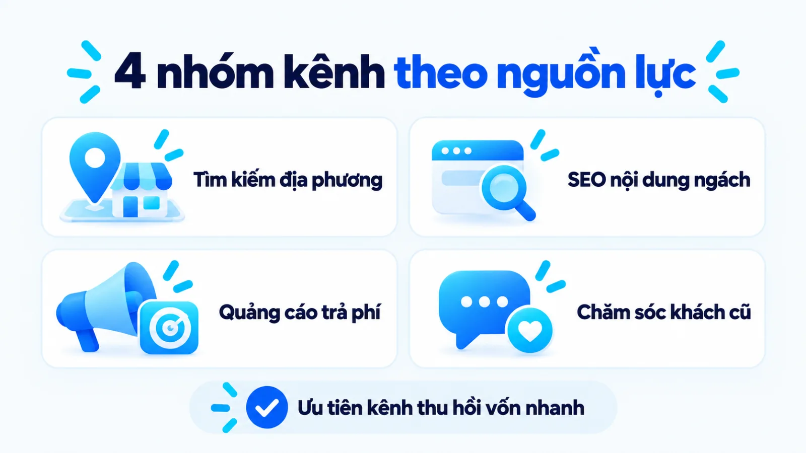
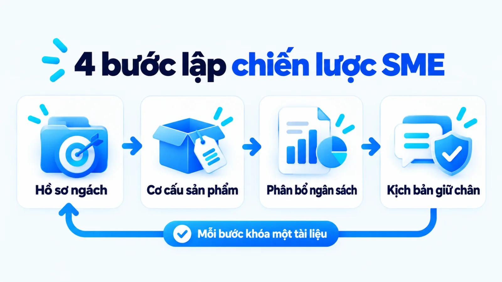
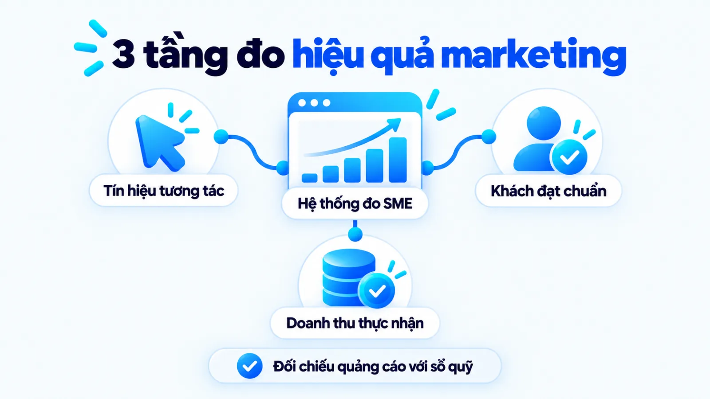

Chiến lược marketing cho doanh nghiệp vừa và nhỏ
Chiến lược marketing cho doanh nghiệp vừa và nhỏ là hệ thống quyết định khoanh vùng phân khúc khách hàng trọng tâm, xác lập lợi thế cạnh tranh và phân bổ nguồn lực hữu hạn vào những điểm chạm thu hồi dòng tiền rõ ràng. Trong thực tế, nhiều doanh nghiệp nhỏ sao chép cách phủ sóng đa kênh của tập đoàn lớn khiến ngân sách bị chia vụn cho các hoạt động bề nổi mà không tạo đủ đơn hàng bù đắp chi phí. Khi vốn lưu động mỏng và nhân sự kiêm nhiệm, việc chọn sai thị trường hoặc ưu tiên nhầm kênh quảng cáo đắt đỏ sẽ làm cạn dòng tiền rất nhanh. Tôi là Lê Tuấn Việt, Marketing Leader tại TAKI Group. Trong bài viết này, tôi làm rõ sự khác biệt giữa bài toán của doanh nghiệp nhỏ với tập đoàn lớn, cách chọn kênh theo nguồn lực và nguyên tắc kiểm soát hiệu quả gắn với doanh thu thực nhận.
- Đăng ngày
- Cập nhật

Tóm tắt nhanh
- Chiến lược marketing cho doanh nghiệp vừa và nhỏ là kỷ luật chọn phân khúc ngách và từ chối các hoạt động đốt tiền bề nổi vượt quá sức chịu đựng của dòng tiền.
- Khác với tập đoàn lớn ưu tiên độ phủ dài hạn, doanh nghiệp nhỏ cần ưu tiên các kênh đón nhu cầu có sẵn như tìm kiếm địa phương, nội dung ngách và chăm sóc khách cũ.
- Quy trình hoạch định bốn bước luôn bắt đầu từ việc tìm điểm nghẽn mua hàng và thiết kế danh mục sản phẩm mồi trước khi quyết định giải ngân vào kênh trả phí.
- Hiệu quả chiến lược phải được kiểm soát trên ba tầng tách biệt: tín hiệu tương tác đầu phễu, chi phí trên mỗi khách hàng tiềm năng đạt chuẩn và doanh thu thực nhận.
Mục lục bài viết8 phần
Chiến lược marketing cho SME là gì
Chiến lược marketing cho doanh nghiệp vừa và nhỏ (SME, viết tắt của Small and Medium Enterprise) là hệ thống các quyết định chọn phân khúc khách hàng trọng tâm, xác lập giá trị khác biệt và phân bổ nguồn lực giới hạn vào những kênh có khả năng thu hồi dòng tiền để tạo lợi thế cạnh tranh bền vững.
Tại Việt Nam, theo Điều 5 Nghị định 80/2021/NĐ-CP do Chính phủ ban hành ngày 26/8/2021 áp dụng cho các doanh nghiệp đăng ký hợp pháp trong nước, quy mô doanh nghiệp nhỏ và vừa được phân định theo lĩnh vực hoạt động dựa trên số lao động tham gia bảo hiểm xã hội bình quân năm kết hợp với tổng doanh thu năm hoặc tổng nguồn vốn.
Riêng trong lĩnh vực thương mại và dịch vụ, Khoản 2 Điều 5 của Nghị định này quy định rõ việc xác định quy mô căn cứ trực tiếp vào định mức nhân sự và năng lực tài chính thực tế. Chính giới hạn về quy mô vốn và bộ máy vận hành này khiến doanh nghiệp nhỏ không thể áp dụng nguyên mẫu các bản chiến lược đánh chiếm thị phần đại trà của những tập đoàn đa quốc gia.
Theo hướng dẫn hoạch định của U.S. Small Business Administration (SBA, Cơ quan Quản lý Doanh nghiệp Nhỏ Hoa Kỳ), việc nghiên cứu thị trường và phân tích cạnh tranh giúp doanh nghiệp nhỏ hiểu hành vi người mua, xác nhận quy mô nhu cầu thực tế và giảm rủi ro tài chính trước khi cam kết nguồn lực. Tôi luôn nhìn chiến lược marketing của SME như kỷ luật chọn những việc không làm để bảo vệ dòng tiền trước khi nghĩ đến mở rộng.
Ba ranh giới nguồn lực của doanh nghiệp vừa và nhỏ
Khi bước vào hoạch định chiến lược marketing cho doanh nghiệp vừa và nhỏ, người quản lý phải giải bài toán tăng trưởng bên trong ba ranh giới nguồn lực cố hữu dưới đây:
- Dòng tiền luân chuyển ngắn hạn: Ngân sách tiếp thị thường trích trực tiếp từ vốn lưu động hàng tháng, đòi hỏi các hoạt động phải tạo ra đơn hàng và thu hồi vốn nhanh để nuôi bộ máy.
- Đội ngũ nhân sự kiêm nhiệm: Bộ phận marketing thường chỉ có một vài nhân sự đảm nhận đồng thời nội dung, quảng cáo và hỗ trợ bán hàng, không đủ sức vận hành sâu nhiều kênh phức tạp.
- Độ nhận diện ban đầu thấp: Thương hiệu mới chưa có sẵn niềm tin thị trường nên khách hàng thường cân nhắc kỹ về rủi ro, buộc doanh nghiệp phải chứng minh năng lực bằng kết quả thực tế.
Hiểu rõ ba ranh giới trên giúp chủ doanh nghiệp nhận ra rằng thất bại thường không đến từ việc thiếu ý tưởng sáng tạo, mà đến từ việc đem nguồn lực mỏng đi giải một bài toán quá rộng. Chọn đúng chiến trường hẹp là điều kiện tiên quyết để tồn tại.
Chiến lược marketing cho SME khác gì tập đoàn lớn
Chiến lược marketing cho doanh nghiệp vừa và nhỏ ưu tiên tập trung vào thị trường ngách có nhu cầu cấp thiết, tối ưu tỷ lệ chuyển đổi trực tiếp và giữ chân khách hàng hiện hữu để bảo toàn dòng tiền, thay vì phủ sóng đa kênh đại trà nhằm chiếm thị phần dài hạn như tập đoàn lớn.
Tài liệu phân tích cạnh tranh của U.S. Small Business Administration chỉ rõ việc mổ xẻ đối thủ theo từng phân khúc giúp doanh nghiệp nhỏ tìm ra lợi thế khác biệt bền vững và nhận diện rào cản gia nhập thay vì đối đầu trực diện trên toàn ngành. Trong khi tập đoàn lớn dùng lợi thế quy mô để ép giá thành và mua độ phủ truyền thông, doanh nghiệp nhỏ thắng nhờ tốc độ thích ứng và sự thấu hiểu sâu một nhóm khách hàng cụ thể.
Để người phụ trách marketing không áp nhầm tư duy của doanh nghiệp lớn vào bộ máy nhỏ, bảng dưới đây đối chiếu sự khác biệt cốt lõi giữa hai mô hình theo năm tiêu chí.
| Tiêu chí | Doanh nghiệp vừa và nhỏ (SME) | Tập đoàn lớn |
|---|---|---|
| Mục tiêu ưu tiên | Tạo dòng tiền dương ngắn hạn, thu hồi vốn nhanh và tích lũy tệp khách hàng trung thành | Mở rộng thị phần toàn ngành, xây dựng tài sản thương hiệu dài hạn và rào cản quy mô |
| Phạm vi thị trường | Khoanh vùng phân khúc ngách hoặc khu vực địa lý hẹp nơi đối thủ lớn bỏ ngỏ dịch vụ | Phủ rộng nhiều phân khúc đại chúng trên phạm vi toàn quốc hoặc đa quốc gia cùng lúc |
| Đòn bẩy cạnh tranh | Giải pháp chuyên sâu cho nỗi đau hẹp, dịch vụ cá nhân hóa và tốc độ phản hồi linh hoạt | Lợi thế chi phí theo quy mô sản xuất lớn, hệ thống phân phối sâu rộng và ngân sách lớn |
| Phân bổ kênh | Tập trung 1 đến 2 kênh đón đúng ý định mua cao và khai thác triệt để tệp khách hàng cũ | Triển khai đồng bộ truyền thông tích hợp đa kênh từ truyền hình, biển bảng đến kỹ thuật số |
| Nhịp độ đo lường | Theo dõi sát chi phí thu hút khách và doanh thu thực nhận theo từng tuần để kịp cắt lỗ | Đánh giá kết hợp chỉ số sức khỏe thương hiệu theo quý, năm cùng hiệu quả bán hàng |
Bảng đối chiếu trên phản ánh quy luật phân bổ nguồn lực chung; tùy vào biên lợi nhuận ngành hàng và giai đoạn gọi vốn mà doanh nghiệp có thể điều chỉnh mức độ ưu tiên.

Phân biệt chiến lược marketing và kế hoạch thực thi
Bên cạnh việc nhầm lẫn quy mô, nhiều chủ doanh nghiệp còn đánh đồng chiến lược với bảng danh sách các việc cần làm trong tháng. Theo tài liệu vận hành của U.S. Small Business Administration, chiến lược marketing xác lập thị trường mục tiêu và lợi thế cạnh tranh cốt lõi, còn kế hoạch marketing cụ thể hóa định hướng đó thành các kênh tiếp cận, hoạt động phân phối, mức ngân sách và chỉ số đo lường ROI (lợi tức đầu tư).
Nói cách khác, chiến lược trả lời câu hỏi doanh nghiệp chọn phục vụ ai và dựa vào giá trị nào để thắng trong dài hạn; còn cách lập kế hoạch marketing giải quyết bài toán phân bổ lịch chạy, đầu việc và người phụ trách theo từng quý. Tương tự, các chiến thuật marketing như chương trình khuyến mãi hay bài đăng mạng xã hội chỉ phát huy tác dụng khi nằm trong một khung chiến lược đã khóa rõ chân dung người mua.
Cách chọn kênh marketing cho SME theo nguồn lực
Doanh nghiệp nhỏ ít vốn nên ưu tiên các kênh đón đúng nhu cầu có sẵn hoặc khai thác tệp khách hàng lân cận như Hồ sơ doanh nghiệp trên Google, nội dung tìm kiếm ngách và chăm sóc khách cũ trước khi mở rộng sang quảng cáo trả phí diện rộng.
Sai lầm phổ biến của nhiều đội ngũ là chọn kênh theo trào lưu trên thị trường thay vì tính toán từ CAC (chi phí thu hút một khách hàng) và thời gian thu hồi vốn. Khi triển khai chiến lược digital marketing, mỗi nhóm kênh đòi hỏi một định mức ngân sách, thời gian chờ kết quả và năng lực vận hành hoàn toàn khác nhau.
Với cửa hàng hoặc dịch vụ gắn với vị trí vật lý, Google Business Profile Help giải thích rằng kết quả tìm kiếm địa phương được quyết định bởi ba yếu tố chính gồm mức độ liên quan, khoảng cách và mức độ nổi bật. Cơ chế này cho phép doanh nghiệp nhỏ tiếp cận đúng khách hàng đang có nhu cầu quanh điểm bán mà không thể dùng tiền mua thứ hạng tự nhiên.
Với nhóm khách tìm hiểu thông tin qua website, hướng dẫn của Google Search Central chỉ rõ SEO (tối ưu hóa công cụ tìm kiếm) giúp máy tìm kiếm hiểu đúng nội dung trang và hỗ trợ người dùng quyết định có truy cập hoặc giao dịch hay không. Trong khi đó, khi dùng quảng cáo trả phí, tài liệu của Meta Business Help Center nhấn mạnh mục tiêu chiến dịch phải khớp trực tiếp với hành động kinh doanh mong muốn ở từng giai đoạn. Bảng dưới đây giúp doanh nghiệp chọn kênh theo bốn nhóm phổ biến.
| Nhóm kênh | Phù hợp khi | Đánh đổi và giới hạn nguồn lực |
|---|---|---|
| Tìm kiếm địa phương | Cửa hàng bán lẻ, phòng khám, dịch vụ ăn uống hoặc sửa chữa có bán kính phục vụ cố định | Bị giới hạn bởi khoảng cách địa lý; cần duy trì thu thập đánh giá thật và cập nhật thông tin đều đặn |
| SEO nội dung ngách | Sản phẩm hoặc dịch vụ B2B, hàng giá trị cao mà khách hàng luôn tra cứu kỹ trước khi mua | Cần từ vài tháng để tích lũy thứ hạng tự nhiên; đòi hỏi người viết hiểu sâu chuyên môn ngành |
| Quảng cáo trả phí | Đã có sản phẩm mồi rõ lợi thế, biên lợi nhuận đủ dày và đội bán hàng phản hồi nhanh | Chi phí biến động theo mức độ cạnh tranh; dừng ngân sách là dừng nguồn khách hàng tiềm năng mới |
| Chăm sóc khách cũ | Ngành hàng có tính tiêu dùng lặp lại, nâng cấp định kỳ hoặc dễ bán chéo sản phẩm bổ trợ | Phụ thuộc vào chất lượng sản phẩm lần đầu và kỷ luật lưu trữ, phân loại dữ liệu người mua |
Khi đọc bảng chọn kênh trên, chủ doanh nghiệp cần đối chiếu với biên lợi nhuận gộp thực tế của từng dòng sản phẩm; nếu quyết định giải ngân cho kênh mạng xã hội trả phí, đội ngũ nên chuẩn bị trước một bản kế hoạch chạy quảng cáo Facebook để kiểm soát ngưỡng dừng lỗ.

Quy trình 4 bước lập chiến lược marketing cho SME
Quy trình lập chiến lược marketing cho doanh nghiệp vừa và nhỏ gồm bốn bước nối tiếp nhau: khoanh vùng phân khúc ngách kèm điểm nghẽn mua hàng, thiết kế lợi thế cạnh tranh và danh mục sản phẩm mồi, chọn kênh trọng tâm theo ngân sách và thiết lập phễu chuyển đổi gắn với giữ chân khách cũ.
Thứ tự bốn bước này được thiết kế theo nguyên tắc khóa chặt đầu ra kinh doanh trước khi mở vòi chi tiêu truyền thông. Đầu ra đã kiểm chứng của bước đứng trước là điều kiện bắt buộc để bước tiếp theo vận hành không lệch hướng.

Bước 1: Khoanh vùng ngách và điểm nghẽn mua hàng
Doanh nghiệp rà soát lại dữ liệu bán hàng hiện có, phỏng vấn trực tiếp nhóm khách đã mua và phân tích đối thủ theo khung hướng dẫn của U.S. Small Business Administration để chọn một phân khúc đủ hẹp mà mình phục vụ tốt nhất. Thay vì mô tả khách hàng bằng nhân khẩu học chung chung, hãy chỉ ra tình huống cụ thể khiến họ phát sinh nhu cầu và lý do lớn nhất khiến họ còn chần chừ chưa xuống tiền.
Đầu ra: Bản hồ sơ phân khúc khách hàng trọng tâm kèm danh sách ba rào cản mua hàng lớn nhất cần tháo gỡ.
Bước 2: Xác định lợi thế cạnh tranh và danh mục mồi
Người lập chiến lược thiết kế cấu trúc sản phẩm thành hai lớp rõ rệt: nhóm sản phẩm mồi giải quyết nhanh một nhu cầu cấp thiết với rào cản thử thấp để kéo khách làm quen, và nhóm sản phẩm chủ lực mang lại biên lợi nhuận chính. Cách xây dựng điểm khác biệt từ nguyên liệu bản địa trong chiến lược marketing của Cocoon là minh chứng rõ cho việc chọn một ngách giá trị sắc nét thay vì cạnh tranh đại trà.
Đầu ra: Bảng phân vai danh mục sản phẩm (sản phẩm dẫn đường, sản phẩm chủ lực, sản phẩm bán kèm) và tuyên bố giá trị cốt lõi.
Bước 3: Chọn kênh trọng tâm và phân bổ ngân sách
Dựa trên hành vi tra cứu của phân khúc đã chọn ở Bước 1 và biên lợi nhuận ở Bước 2, doanh nghiệp dồn nguồn lực vào tối đa một đến hai kênh chủ lực có khả năng chuyển đổi cao nhất. Ngân sách không được chia theo cảm tính mà phải tính ngược từ mục tiêu doanh thu, tỷ lệ chốt đơn thực tế và hạn mức chi phí thu hút khách hàng tối đa mà dòng tiền chịu đựng được.
Đầu ra: Bảng phân bổ ngân sách theo kênh, định mức nhân sự phụ trách và ngưỡng chi phí dừng lỗ cho từng kỳ đo.
Bước 4: Thiết lập phễu chuyển đổi và giữ chân khách
Đội ngũ chuẩn hóa toàn bộ hành trình từ lúc khách hàng để lại thông tin đến khi nhận hàng và quay lại mua lần tiếp theo. Bài học mở rộng từ dịch vụ cốt lõi sang hệ sinh thái giữ chân người dùng trong chiến lược marketing của Grab cho thấy lợi nhuận bền vững của doanh nghiệp luôn nằm ở tần suất mua lặp lại chứ không nằm ở giao dịch đầu tiên.
Đầu ra: Kịch bản xử lý khách hàng tiềm năng kèm cam kết thời gian phản hồi của đội bán hàng và lịch chăm sóc khách cũ định kỳ.
Ba sai lầm khiến chiến lược marketing SME đứt gãy
Chiến lược marketing của doanh nghiệp vừa và nhỏ thường đứt gãy do ba sai lầm cốt lõi: dàn trải ngân sách mỏng ra quá nhiều kênh cùng lúc, dùng giảm giá sâu làm công cụ duy nhất để kéo khách mới và đứt mạch phối hợp giữa khâu thu hút lượt hỏi với quy trình tư vấn chốt đơn.
Vì sao nhiều doanh nghiệp nhỏ càng đẩy mạnh quảng cáo thì dòng tiền cuối tháng càng âm? Nguyên nhân nằm ở chỗ người quản lý nhìn thấy đối thủ xuất hiện trên nhiều nền tảng nên vội vã làm theo, mà không nhận ra mình đang thiếu cả cấu trúc sản phẩm giữ chân lẫn quy trình khóa chuyển đổi. Ba điểm đứt gãy thường gặp nhất trong vận hành thực tế gồm:
- Chia vụn nguồn lực cho đa kênh bề nổi: Một nhân sự phải làm đồng thời nội dung cho bốn đến năm mạng xã hội khiến kênh nào cũng hời hợt, không đủ dữ liệu để tối ưu chuyển đổi.
- Dùng khuyến mãi sâu làm đòn bẩy duy nhất: Hạ giá bán dưới ngưỡng an toàn để kéo lượt mua đầu tiên nhưng không có kịch bản chăm sóc sau bán, khiến khách rời đi ngay khi hết ưu đãi.
- Đứt gãy giữa marketing và bán hàng: Bộ phận tiếp thị chỉ đếm số lượt nhắn tin bề nổi, trong khi đội ngũ tư vấn phản hồi chậm và thiếu tài liệu tháo gỡ rào cản khiến tỷ lệ chốt đơn sụt giảm.
Trong thực tế cố vấn, việc chuyển trọng tâm từ chạy quảng cáo rời rạc sang chuẩn hóa điểm bán, danh mục hàng và trải nghiệm khách hàng tại chỗ tạo ra sự thay đổi rõ rệt. Chẳng hạn, tại dự án cố vấn Marketing cho Uyên Uyên Mart (từ tháng 5/2025 đến tháng 5/2026) do tôi phụ trách, việc đồng bộ hoạt động tiếp thị đã góp phần tăng 45% lượt khách đến cửa hàng và nâng doanh thu toàn hệ thống từ 3 lên 6 tỷ đồng mỗi tháng (tăng 100% so với cùng kỳ). Để thấy rõ cơ chế đối chiếu giữa cách làm sai và cách làm đúng ở quy mô nhỏ, hãy xem tình huống minh họa dưới đây.
Ví dụ biên tập, không phải kết quả khách hàng thật
Đối chiếu hai cách phân bổ nguồn lực của một xưởng nội thất quy mô nhỏ
Giả định một xưởng nội thất căn hộ tại Hà Nội có ngân sách tiếp thị giới hạn và hai nhân sự phụ trách. Ở cách làm sai, xưởng chia đều tiền chạy quảng cáo diện rộng cho toàn bộ danh mục sản phẩm kèm ưu đãi giảm giá trực tiếp; kết quả thu về hàng trăm tin nhắn hỏi giá lẻ nhưng không chốt được hợp đồng thi công vì khách chỉ tìm đồ giá rẻ. Ở cách làm đúng trong ví dụ biên tập này, xưởng khoanh vùng riêng tệp chủ căn hộ chung cư bàn giao thô tại ba quận lân cận, dùng gói thiết kế phòng khách làm sản phẩm mồi và kết hợp đối tác môi giới địa phương để thu hồi vốn ngay từ tháng đầu tiên.
Khi nào SME chưa nên mở rộng đa kênh trả phí
Không phải lúc nào việc rót thêm tiền vào quảng cáo hay mở thêm kênh mới cũng mang lại tăng trưởng. Doanh nghiệp vừa và nhỏ cần tạm dừng việc mở rộng đa kênh trả phí khi đang vướng một trong ba điều kiện giới hạn: tỷ lệ chốt đơn từ nguồn khách tự nhiên hiện tại còn quá thấp, biên lợi nhuận gộp chưa tính xong ngưỡng chịu đựng chi phí quảng cáo, hoặc đội bán hàng vẫn đang bỏ sót khách hàng tiềm năng trong giờ cao điểm. Muốn mở rộng kênh thì phải khóa chặt phễu trước.
Cách đo lường hiệu quả chiến lược marketing SME
Hiệu quả chiến lược marketing cho doanh nghiệp vừa và nhỏ phải được đo lường qua hệ thống chỉ số ba tầng gồm tín hiệu tương tác đầu phễu, khách hàng tiềm năng đạt chuẩn kèm chi phí chuyển đổi ở giữa phễu và doanh thu thực thu cùng tỷ lệ mua lặp lại ở cuối phễu.
Nhiều báo cáo marketing của doanh nghiệp nhỏ chỉ dừng ở lượt xem trang hoặc lượt tương tác bài viết, khiến chủ doanh nghiệp không biết tiền chi ra có quay về quỹ hay không. Theo tài liệu năm 2024 của Google Analytics Help, trong Google Analytics 4 (GA4, công cụ phân tích website của Google), sự kiện quan trọng (Key event) là hành động đo lường trực tiếp đóng góp vào thành công kinh doanh như gửi biểu mẫu tư vấn hoặc hoàn tất đơn hàng, tách biệt hoàn toàn với các sự kiện tương tác thông thường.
Khi đội ngũ chuẩn hóa được định nghĩa khách hàng tiềm năng đạt chuẩn và theo dõi sát chi phí ở tầng giữa phễu, việc tối ưu ngân sách mới đi vào thực chất. Đơn cử trong dự án cố vấn Marketing cho Hệ thống Y Đa khoa TOMEC (tháng 8/2025 đến tháng 8/2026) do tôi phụ trách, việc kiểm soát chặt phễu chuyển đổi đã giúp tăng 40% khách hàng tiềm năng và giảm 54% CPL (chi phí trên mỗi khách hàng tiềm năng), từ 1,2 triệu xuống 550.000 đồng mỗi data. Bảng dưới đây cấu trúc khung đo lường ba tầng dành cho SME.
| Tầng đo lường | Chỉ số và nguồn dữ liệu đối chiếu | Giới hạn khi đọc và quyết định |
|---|---|---|
| Tầng 1: Tương tác | Lượt hiển thị, tỷ lệ nhấp (CTR), lượt xem trang đích và sự kiện tương tác từ trình quản lý kênh, GA4 | Chỉ phản ánh sức hút của thông điệp ban đầu; tuyệt đối không dùng để kết luận hiệu quả doanh thu |
| Tầng 2: Khách đạt chuẩn | Số khách tiềm năng đạt chuẩn, CPL và CPA (chi phí mỗi hành động mua) đối chiếu giữa kênh và sổ bán hàng | Cần loại trừ tin nhắn rác và số trùng lặp; dùng để quyết định giữ, tắt hoặc điều chỉnh nhóm chiến dịch |
| Tầng 3: Doanh thu xác nhận | Doanh thu thực nhận, ROAS (lợi tức chi tiêu quảng cáo) và tỷ lệ khách mua lặp lại từ phần mềm kế toán, POS | Có độ trễ theo chu kỳ chốt đơn; là căn cứ cuối cùng để quyết định mở rộng hay thu hẹp ngân sách quý tới |
Khi áp dụng bảng đo lường trên, người phụ trách cần lưu ý giới hạn quy kết đa điểm chạm: khách hàng có thể nhìn thấy bài viết trên mạng xã hội nhưng vài ngày sau mới tìm tên cửa hàng trên Google hoặc ghé trực tiếp điểm bán để mua. Vì vậy, tôi luôn khuyến nghị doanh nghiệp đối chiếu chỉ số trên trình quản lý quảng cáo với tổng doanh thu thực nhận toàn hệ thống theo cùng một kỳ đo tuần và tháng.

Câu hỏi thường gặp về chiến lược marketing SME
Doanh nghiệp nhỏ nên chia ngân sách tìm và giữ khách sao?
Không có một tỷ lệ cố định áp dụng cho mọi ngành vì cách chia ngân sách phụ thuộc vào giai đoạn phát triển và chu kỳ mua lại của sản phẩm. Khi mới gia nhập thị trường chưa có khách hàng, ngân sách buộc phải dồn cho việc thu hút tệp khách đầu tiên trong phân khúc ngách. Ngay khi đã có nhóm người mua lần đầu, doanh nghiệp cần trích khoản cố định để chăm sóc và bán chéo nhằm giảm chi phí thu hút bình quân.
Vì sao SME chạy quảng cáo có lượt hỏi nhưng vẫn lỗ?
Nguyên nhân cốt lõi đến từ việc thông điệp quảng cáo thu hút tệp người xem quá rộng chỉ tò mò về giá rẻ nhưng không có khả năng chi trả thực tế. Bên cạnh đó, quy trình phản hồi chậm hoặc kịch bản tư vấn của đội bán hàng chưa tháo gỡ được rào cản niềm tin khiến tỷ lệ chốt đơn thấp. Khi biên lợi nhuận đơn đầu quá mỏng so với chi phí quảng cáo và thiếu cơ chế mua lặp lại, doanh nghiệp sẽ lỗ vốn.
Bao lâu SME nên rà soát lại chiến lược marketing một lần?
Định hướng chiến lược về phân khúc khách hàng và lợi thế cạnh tranh cần giữ ổn định tối thiểu theo chu kỳ nửa năm hoặc một năm để đủ dữ liệu đánh giá sức mua. Ngược lại, các chỉ số thực thi như chi phí khách hàng tiềm năng, tỷ lệ chốt đơn và hiệu quả kênh cần được kiểm tra hàng tuần và hàng tháng. Doanh nghiệp chỉ đổi hướng chiến lược sớm hơn khi đứt gãy nguồn cung hoặc phân khúc hiện tại không đủ nuôi dòng tiền.
SME chỉ có 1 nhân sự marketing thì nên ưu tiên việc gì?
Nhân sự duy nhất phải ưu tiên chuẩn hóa điểm chạm chốt đơn và tập trung vận hành sâu một kênh đón nhu cầu rõ nhất như tìm kiếm địa phương hoặc một mạng xã hội chủ lực. Việc tự sản xuất nội dung dàn trải trên quá nhiều nền tảng cùng lúc sẽ làm thông điệp hời hợt và không còn thời gian theo dõi chuyển đổi. Người làm marketing nên phối hợp sát với đội bán hàng để gom câu hỏi thật của khách làm chất liệu thuyết phục.
Khi nào SME nên thuê agency ngoài thay vì tự làm nội bộ?
Doanh nghiệp chỉ nên thuê đơn vị bên ngoài khi đã xác định rõ chân dung khách hàng mục tiêu, biên lợi nhuận gộp và quy trình chốt đơn nội bộ nhưng thiếu kỹ thuật chuyên sâu như tối ưu tìm kiếm hay quảng cáo. Nếu chủ doanh nghiệp chưa rõ lợi thế sản phẩm hoặc đội bán hàng chưa có kịch bản tư vấn, việc giao khoán cho bên ngoài sẽ không tạo ra doanh thu. Dù thuê ngoài, doanh nghiệp vẫn phải giữ quyền kiểm soát tệp dữ liệu khách hàng.
Chiến lược marketing B2B và B2C cho SME khác nhau ở đâu?
Chiến lược B2B và B2C khác nhau ở độ dài chu kỳ cân nhắc và số người tham gia quyết định mua hàng. Với mảng bán cho doanh nghiệp, chu kỳ duyệt mua dài nên cần ưu tiên nội dung chứng minh năng lực, hồ sơ giải pháp và đội ngũ tư vấn trực tiếp. Với mảng bán lẻ cho cá nhân, quyết định diễn ra nhanh hơn nên trọng tâm nằm ở sự hiện diện địa phương, trải nghiệm mua thuận tiện và đánh giá thật từ người mua trước.
Kết luận
Bản chất của một chiến lược marketing vững chắc cho doanh nghiệp vừa và nhỏ nằm ở kỷ luật khoanh vùng đúng phân khúc ngách, dồn nguồn lực vào kênh có khả năng thu hồi vốn rõ ràng và kiên trì giữ chân khách hàng cũ thay vì chạy theo độ phủ bề nổi.
Ngay trong tuần này, bạn có thể tự rà soát lại danh mục sản phẩm hiện có và đối chiếu sổ bán hàng ba tháng gần nhất để xác định chính xác nhóm khách nào đang mang lại biên lợi nhuận cao nhất cùng kênh tiếp cận tạo ra họ. Đây là bước kiểm tra thực tế không tốn chi phí nhưng giúp cắt bỏ ngay những khoản chi tiêu truyền thông đang chạy theo quán tính.
Khi doanh nghiệp bắt đầu mở rộng quy mô nhân sự hoặc cần kết nối đồng bộ từ nghiên cứu thị trường, cấu trúc sản phẩm đến hệ thống bảng biểu kiểm soát đa kênh, việc chỉnh sửa từng mẫu quảng cáo lẻ sẽ không còn đủ. Bạn có thể tham khảo thêm các khung hoạch định hệ thống tại chuyên mục Quản trị Marketing để chuẩn hóa quy trình vận hành cho đội ngũ.
Doanh nghiệp của bạn đang vướng ở khâu chọn phân khúc ngách ban đầu hay đang gặp tình trạng chi phí quảng cáo tăng nhưng chưa chuyển hóa thành dòng tiền thực tế?